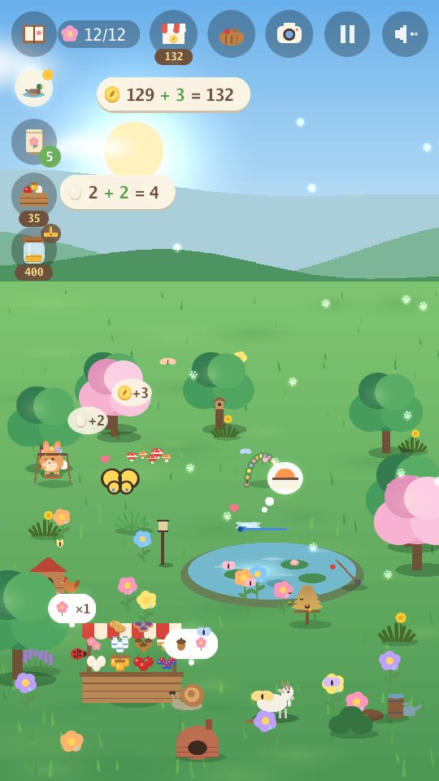
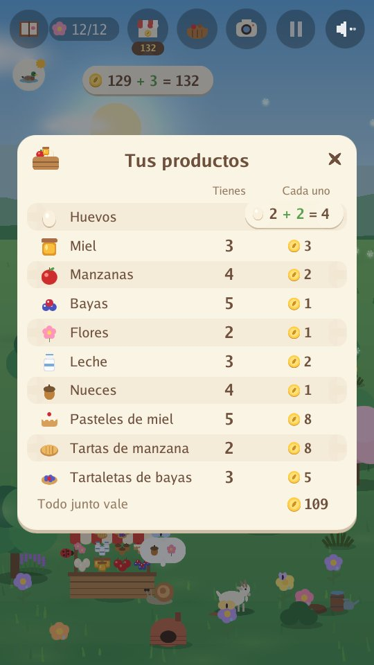
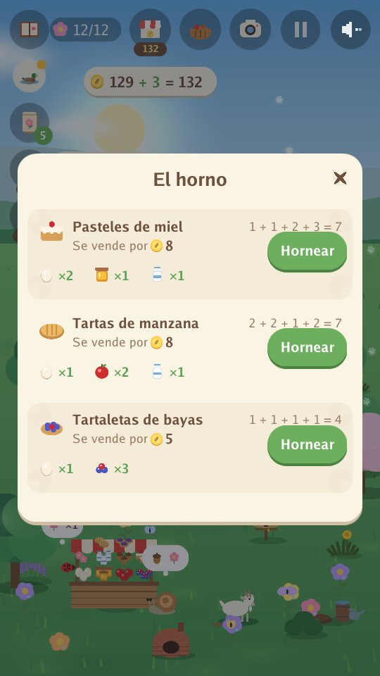
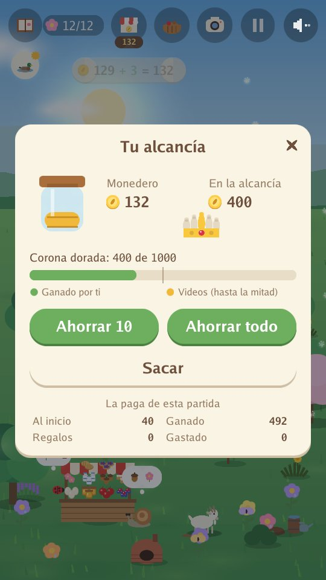

Arnoob Land
Un juego tranquilo de naturaleza para niños

Un jardín tranquilo necesita tu ayuda. Un conejito quiere que vuelva a ser un hogar, semilla a semilla. Planta flores, construye un estanque, pon comida y mira quién viene de visita. Cada estación trae nuevos amigos animales: abejas y patos en primavera, tortugas y colibríes en verano, zorros y tejones en otoño, búhos nivales y nutrias en invierno.
- Tranquilo y suave: sin relojes, sin puntos que perder, sin nada en qué fallar.
- Solo sonidos de la naturaleza: viento, agua, lluvia, pájaros y voces de animales. Sin música.
- Cuatro estaciones y 80 animales de los que hacerte amigo, con animales dorados y momentos raros por descubrir.
- Mira la luna: noche tras noche cambia de luna nueva a luna llena y vuelta a empezar, y a los búhos les encantan las noches de luna llena.
- Haz fotos de tus amigos animales para tu álbum: cada foto te da una moneda.
- Aprende a cuidar de tus amigos: fíjate en lo que necesita cada animal y constrúyele su hogar (un estanque, una pila de troncos, un arbusto de bayas...) para que los nuevos amigos lleguen antes; cumple sus deseos, ayuda a dos amigos a jugar juntos, regala una flor a un amigo y mira cómo crecen las amistades.
- Cuida una pequeña granja: da de comer a las gallinas, cuida de las abejas y de una cabra, recoge manzanas, bayas y flores, y véndelas en tu animado puesto del mercado a los amigos que vienen a comprar. Lo que compraste se puede vender por la mitad de su precio, menos el estanque, las plantas, las semillas y los árboles.
- Sé ayudante del jardín: arranca malas hierbas, rastrilla hojas y quita la nieve para el montón de compost, que da una cosecha extra y una granja más rápida, y riega las flores y los árboles frutales. Cada tarea sube tu nivel de ayudante del jardín.
- Hornea y prepara pedidos: convierte huevos, leche, miel, manzanas y bayas en pasteles, tartas, tartaletas y mermelada que se venden por más, y suma la cuenta cuando un amigo trae un pequeño pedido.
- Cuenta mientras juegas: cada huevo que recoges o vendes, y cada moneda que ganas o gastas, aparece como una suma sencilla, como 3 + 2 = 5.
- Aprende a ahorrar: pon monedas en tu alcancía, mírala crecer un poco cada día y ahorra para la corona dorada.
- Construye la corona dorada pieza a pieza: ahorrar la llena de oro, y tus amigos traen sus tres gemas.
- Un juego tranquilo en cada estación: pescar (los peces vuelven al agua), atrapar luciérnagas (luego salen volando), la cosecha de nueces y manzanas en otoño y construir un fuerte de nieve.
- Escondite con tus amigos: desde tu quinto amigo, tus amigos se esconden por el jardín y juegan juntos, y cuando los hayas encontrado a todos, los amigos dorados vienen más a menudo.
- Ocho idiomas: inglés, árabe, chino (simplificado), francés, alemán, japonés, ruso y español. El juego empieza en el idioma de tu teléfono (en inglés para cualquier otro), y el globo de la pantalla de inicio lo cambia. El juego se escribió en inglés; los otros siete idiomas se tradujeron con ayuda de la IA.
- Un viaje largo y tranquilo: juega todo el año a lo largo de muchos días, o una partida más corta de una sola estación. Tu jardín se guarda mientras juegas.
- Un jardín soñado, si quieres: ahorra para un columpio, un puentecito, una fuente, una casa en el árbol y más. Tus amigos los usan, y cuatro amigos secretos podrían venir a verlos.
En el jardín




Para madres y padres
Sin cuentas, sin chat y sin compras. Los videos solo se reproducen cuando el niño o la niña elige ver uno, a cambio de un pequeño regalo en el juego: una cesta de productos para vender, unas monedas, una sorpresa para el jardín, semillas o comida.
Política de privacidad app-ads.txt